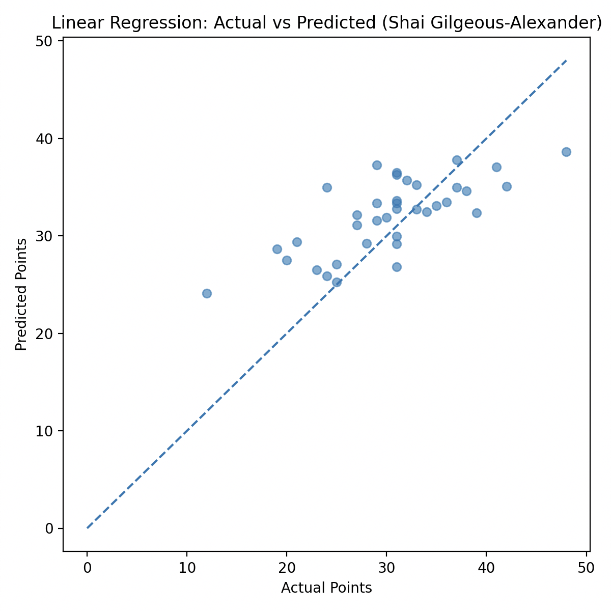
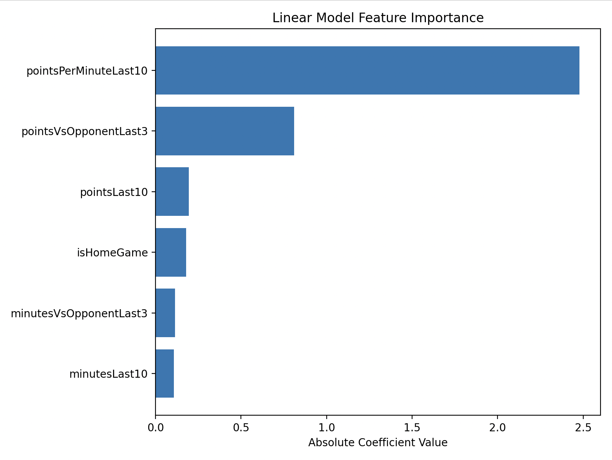
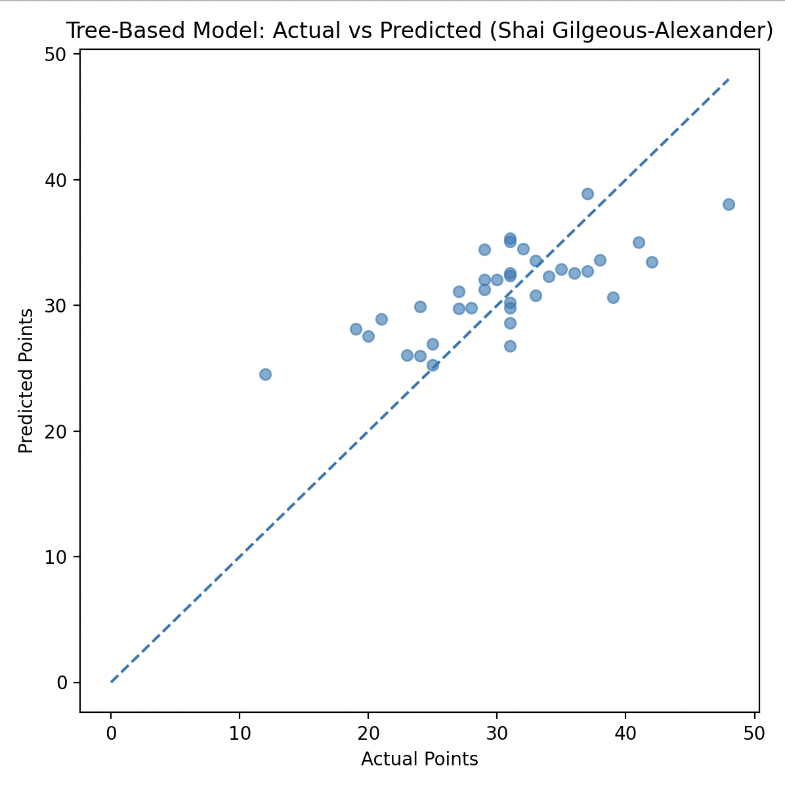
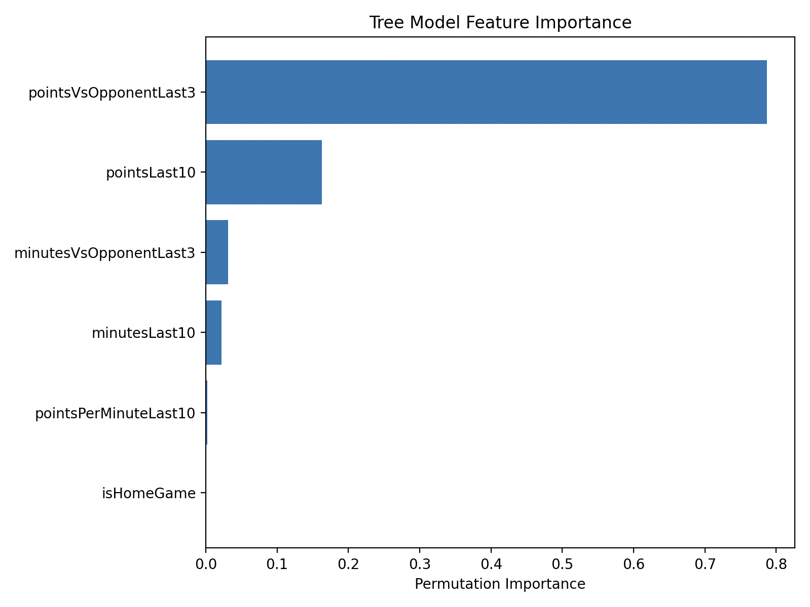

By Joseph Zou · December 2025
This project began as a personal frustration rooted in something I genuinely cared about. I have been a long-time Warriors fan who watches nearly every game, follows player trends, and pays close attention to rotations and matchups. When I first started placing NBA player props casually with friends, I assumed that this level of attention would naturally translate into better predictions.
Instead, I found the opposite. Even when my intuition felt strong, results were inconsistent. A player would get into foul trouble early, lose minutes due to a coaching decision, or see usage drop unexpectedly in a blowout. Over time, I realized that while intuition captures narrative context, it struggles to consistently balance recent performance, matchup difficulty, and playing time uncertainty.
That realization motivated me to build something more systematic. I wanted a model that could quantify trends I was already thinking about—recent form, opponent strength, efficiency, and minutes—while also exposing where uncertainty truly dominates. This project evolved from simple heuristics into a full machine learning pipeline designed to predict single-game NBA point totals.
The objective of this project is to predict how many points an individual NBA player
will score in a single upcoming game. Historical player game logs and matchup data
were collected using the nba_api Python library, covering multiple seasons
of regular-season data.
I engineered features focused on short-term trends and matchup context, including rolling scoring averages, opponent-adjusted performance windows, efficiency metrics, recent minutes played, and home vs. away indicators. The target variable is points scored in the next game, evaluated using held-out test data.
I began with a linear regression model to establish a clear and interpretable baseline. While simple, this model provides insight into which features carry the strongest linear signal and serves as a benchmark for more complex approaches.


The linear model performs reasonably well for mid-range scorers, with predictions clustering near the identity line. However, it systematically underestimates extreme performances, particularly for high-usage players. Feature importance analysis shows that recent points-per-minute efficiency dominates, followed by opponent-adjusted scoring history.
This behavior reflects an inherent limitation of linear models in sports contexts: extreme outcomes are often driven by non-linear interactions that simple additive relationships cannot fully capture.
To capture non-linear effects and feature interactions, I trained a tree-based regression model. This approach allows the model to treat similar features differently depending on context, such as distinguishing between high-minute starters and lower-minute role players.


The tree-based model produces a modest improvement over the linear baseline. Predictions are more flexible at higher point totals, and permutation importance reveals a stronger reliance on opponent-specific scoring windows.
Despite its added complexity, the improvement is incremental rather than dramatic. This suggests that while non-linear structure exists, much of the remaining error arises from factors outside the model’s control rather than insufficient expressiveness.
To better reflect how scoring occurs in real games, I decomposed the prediction task into two separate components: minutes played and points-per-minute efficiency. Rather than predicting total points directly, I trained independent models for each component and recombined them to form a final estimate.
While this approach improves interpretability, it also exposes a key challenge: predicting minutes accurately is substantially harder than predicting efficiency. Coaching decisions, foul trouble, injuries, and game flow introduce large variance that is difficult to capture using historical data alone.
This decomposition highlighted that minutes uncertainty (driven by coaching decisions, foul trouble, and injuries) remains the dominant source of error in NBA prop prediction.
This project reinforced that machine learning does not eliminate uncertainty, especially in a domain as dynamic as professional sports. However, it can transform intuition into a structured, testable framework that clarifies where confidence is justified and where caution is necessary.
Future work includes integrating injury reports, rest-day effects, lineup announcements, and real-time betting lines. While I no longer bet on sports, this project continues to shape how I think about prediction, uncertainty, and model evaluation in real-world settings.